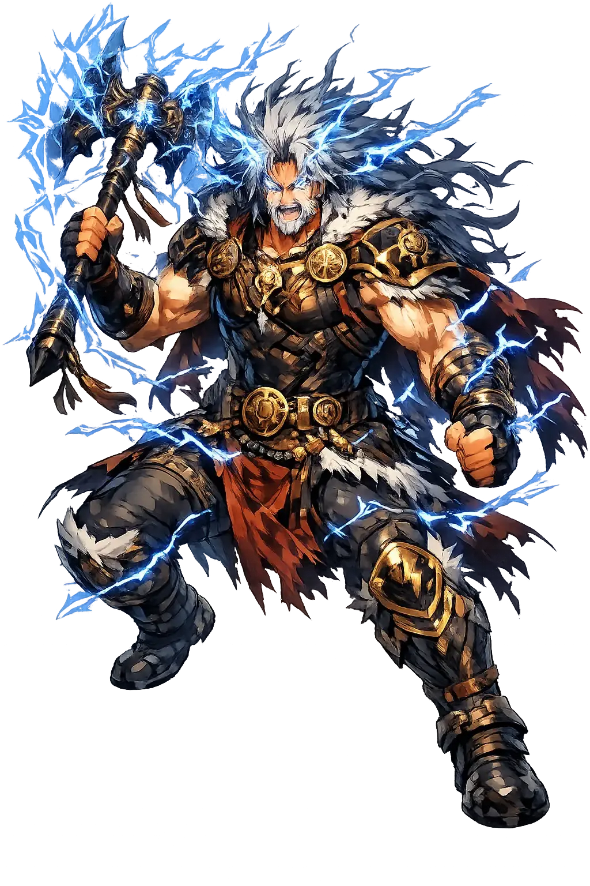

The Living Myth
God of Thunder, Lightning and Storms · The Thunder of the Oaks

Stories of Perkūnas
Perkūnas's mythology is preserved largely in Lithuanian and Latvian folklore recorded in the nineteenth and early twentieth centuries, after the medieval church had suppressed his cult. The peasants remembered him as the thunderer who defended the moral order against devils, witches, and the chaos of the wilderness — and the recorders wrote it down just in time.
In Lithuanian folklore Perkūnas's tree is the oak, and the lightning-struck oak is his signature. Jonas Basanavičius and the nineteenth-century collectors recorded what the peasantry still practiced: when his bolt split a tree, the fire that remained was gathered as sacred and carried home without letting it die, to kindle the hearth anew; splinters of the struck wood were kept against lightning and illness, and offerings were left at the lightning-stones at the roots. The oak grove itself was his temple — an open-air sanctuary needing no roof, since its congregation met under thunderheads. Folklore adds the companion image of his forge: in the deep of the storm the god hammers his bolts on the anvil of the sky, and the long rolling after-clap is the echo of his work. The theology is exact: the tree that stands highest takes the blow, and the fire that kills the tree feeds the house. What strikes the sacred thing becomes the sacred thing.
The Latvian dainas — the hundreds of thousands of short folk songs gathered by Krišjānis Barons in the nineteenth century — give Pērkons his juridical office. Thunder, the dainas say, does not strike at random: it searches out the perjurer, the thief whose theft was never confessed, the master who cheated his laborers, the miser who turned the beggar from his door. One strain has Pērkons striking the oath-breaker's barns; another has the thunder god walking the roads in human disguise, asking shelter and rewarding or punishing what he finds. A clap of thunder during a quarrel or a lawsuit was heard as his verdict entering the record. The tradition is not naive about this: some dainas admit the bolt sometimes falls on the innocent cottage, and the people's answer is that hidden guilt must have been there. In a land without effective courts for the poor, the thunderer's roll was the appeal that always found a judge — the sky, unlike the manor, could not be bribed.
Perkūnas's standing antagonist is Velnias — the devil of Christianized folklore, but underneath the borrowed horns the old opponent of the sky: the power of the forest, the deep earth, and the night. The Lithuanian tale-cycles collected by Basanavičius and analyzed by Algirdas Julien Greimas send the two into endless combat. Velnias hides the sun and moon, steals the celestial cattle, floods the fields, or simply hides behind a tree until Perkūnas's bolt roots him out; sometimes, in the strangest layer of the tradition, Velnias is the thunderer's own smith, hammering bolts in a mountain forge for a master who will not pay him fairly. The dual is among the oldest structures in Indo-European myth — bright sky against dark earth — but in the Baltic it stayed personal and comic at once: two neighbors of the cosmos, forever stealing from and chasing one another across the woods. The storm is the sound of their feud, and the peasant under the rafters its amused audience.
The most beloved Lithuanian thunder legend is late and literary, but it has carried Perkūnas's name farther than any hymn. The mortal fisherman Kastytis dared to set his nets in the sea-queen Jūratė's domain — the undersea palace of amber at the bottom of the Baltic — and the goddess, instead of punishing him, loved him and kept him in her coral halls. Perkūnas, enforcer of every boundary, struck the palace with his bolt and shattered it into a thousand pieces; Jūratė was chained to the ruins, Kastytis was drowned, and the storm-broken fragments of the amber palace still wash ashore after every thunderstorm. The tale is recorded from folk tellers in the nineteenth century, not from medieval sources — but its geology is true to the coast, where amber appears in the sand most plentifully after autumn gales. The god's role is unchanged from the oldest layer of his myth: desire that crosses the border between worlds is exactly what thunder is for.
Storms, Justice, and the Baltic Sky-Father
Perkūnas is the Lithuanian thunder god, the voice of the oak and the bolt that strikes the unjust. In Baltic folklore he rides across the sky in a flaming chariot, hurling stone axes and lightning arrows at demons, liars, and those who break their oaths. He is not merely weather; he is the moral sky, the enforcer of cosmic law in a world of dark forests and hidden spirits.
His voice is thunder and his weapon is the lightning bolt that splits the sky.
The oak is his tree; sacrifices were made at oak groves and stones struck by lightning.
He punishes oath-breakers, murderers, and those who wrong the innocent.
He battles Velnias, the devil or forest spirit, and other chthonic forces.
From the original script to the living URL
Perkūnas
The name survives only in scholarly transliteration. Perkūnas is the standard Baltic romanisation, documented in academic sources — “Lithuanian/Baltic thunder deity, cognate with Slavic Perun and Indo-Iranian Parjanya.”. Its macron-length vowels preserve distinctions lost in plain ASCII.
No indigenous writing system is securely attested for individual baltic names. The form shown is a modern scholarly transliteration.
perkunas
Reduced to plain perkunas, the name loses everything that made it specific: macron-length vowels. What remains is an ASCII string that machines can parse but that no longer speaks with its original voice.
Perkūnas
The Unicode restoration recovers what ASCII flattened. Perkūnas restores macron-length vowels, returning the name to its original written dignity. The domain encodes to Punycode, but the browser displays the truth.
Perkūnas.com → xn--perknas-3sb.com
The non-ASCII characters in Perkūnas are encoded while the ASCII remains visible. To the DNS, it is Punycode. To humanity, it is Perkūnas.
Owned, ideal, and ASCII forms of Perkūnas
Perkūnas
The live temple domain — perkūnas.com.
perkunas
The plain ASCII fallback — what DNS and legacy systems see.
How Perkūnas was spoken
How Perkūnas is preserved in writing
No indigenous writing system is securely attested for individual baltic names. The form shown is a modern scholarly transliteration.
Contribute scholarly provenance →Perkūnas is the sky's conscience. His thunder is not random noise but a voice that says: there is a limit to what can be hidden. In an age of corporate crime and political lies, his mythology still resonates — the belief that some justice arrives not from human courts but from the sheer force of nature. To remember Perkūnas is to remember that the sky is watching, and that oaths once mattered enough to call down lightning. Yet the folklore is wiser than the moral slogan: it also knows the bolt sometimes hits the innocent cottage, and it answers with stubborn faith rather than doubt. That double vision — justice that must be believed in even when it miscarries — is what makes the Baltic thunderer more than a storm in a costume. He is the oldest European image of a law above the law.
Enter Extended Lore